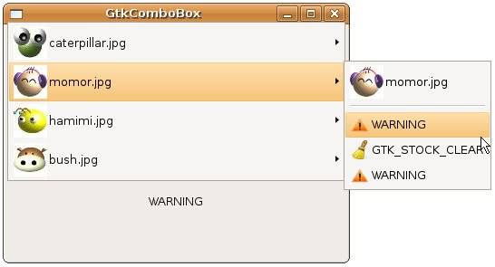

GtkComboBox 與 GtkListStore 中介紹了平坦無階層的選項如何製作，若想要製作有階層的樹狀結構，則要搭配GtkTreeStore來使用，主要的差別在於，GtkTreeStroe具 有父子節點關係，也因此在加入子節點時，必須指明父節點為誰，加入節點可以使用gtk_tree_store_append()函式，設定節點資料可以使 用gtk_tree_store_set()函式：
void gtk_tree_store_append(GtkTreeStore *tree_store,
GtkTreeIter *iter,
GtkTreeIter *parent);
void gtk_tree_store_set(GtkTreeStore *tree_store,
GtkTreeIter *iter,
...);
GtkTreeIter *iter,
GtkTreeIter *parent);
void gtk_tree_store_set(GtkTreeStore *tree_store,
GtkTreeIter *iter,
...);
使用gtk_tree_store_append()時若無父節點，則第三個參數設定為NULL，表示這是最上層節點，也因此，您必須有兩個GtkTreeIter，一個指向目前GtkTreeStore中的父節點位置，一個用以指向子節點位置。
下面這個程式改寫 GtkComboBox 與 GtkListStore，使其具有子階層，在GtkComboBox中會以子選單方式呈現，子選單的內容是亂數選取決定的，程式的改寫主要都是在Model的建立部份：
- gtk_combo_box_with_tree_demo.c
#include <gtk/gtk.h>
enum {
PIXBUF_COL,
TEXT_COL
};
GtkTreeModel* createModel() {
const gchar *files[] = {"caterpillar.jpg", "momor.jpg",
"hamimi.jpg", "bush.jpg"};
gchar *stocks[] = {
GTK_STOCK_DIALOG_WARNING,
GTK_STOCK_STOP,
GTK_STOCK_NEW,
GTK_STOCK_CLEAR,
GTK_STOCK_OPEN
};
gchar *stockNames[] = {
"WARNING",
"STOP",
"NEW",
"GTK_STOCK_CLEAR",
"GTK_STOCK_OPEN"
};
GtkWidget *cellView;
GdkPixbuf *pixbuf;
GtkTreeIter iter1, iter2;
GtkTreeStore *store;
gint i, j, s;
store = gtk_tree_store_new(2, GDK_TYPE_PIXBUF, G_TYPE_STRING);
cellView = gtk_cell_view_new();
for(i = 0; i < 4; i++) {
pixbuf = gdk_pixbuf_new_from_file(files[i], NULL);
gtk_tree_store_append(store, &iter1, NULL);
gtk_tree_store_set(store, &iter1,
PIXBUF_COL, pixbuf,
TEXT_COL, files[i],
-1);
gdk_pixbuf_unref(pixbuf);
for(j = 0; j < 3; j++) {
s = rand() % 5;
pixbuf = gtk_widget_render_icon(cellView, stocks[s],
GTK_ICON_SIZE_BUTTON, NULL);
gtk_tree_store_append(store, &iter2, &iter1);
gtk_tree_store_set(store, &iter2,
PIXBUF_COL, pixbuf,
TEXT_COL, stockNames[s],
-1);
gdk_pixbuf_unref(pixbuf);
}
}
return GTK_TREE_MODEL(store);
}
gboolean combo_changed(GtkComboBox *comboBox, GtkLabel *label) {
GtkTreeModel *model = gtk_combo_box_get_model(comboBox);
GtkTreeIter iter;
gchar *active;
gtk_combo_box_get_active_iter(comboBox, &iter);
gtk_tree_model_get(model, &iter,
1, &active,
-1);
gtk_label_set_text(label, active);
}
int main(int argc, char *argv[]) {
GtkWidget *window;
GtkWidget *comboBox;
GtkCellRenderer *renderer;
GtkWidget *label;
GtkWidget *vbox;
gtk_init(&argc, &argv);
window = gtk_window_new(GTK_WINDOW_TOPLEVEL);
gtk_window_set_title(GTK_WINDOW(window), "GtkComboBox");
gtk_window_set_default_size(GTK_WINDOW(window), 200, 50);
comboBox = gtk_combo_box_new_with_model(createModel());
gtk_combo_box_set_active(GTK_COMBO_BOX(comboBox), 0);
renderer = gtk_cell_renderer_pixbuf_new();
gtk_cell_layout_pack_start(GTK_CELL_LAYOUT(comboBox), renderer, FALSE);
gtk_cell_layout_set_attributes(GTK_CELL_LAYOUT(comboBox), renderer,
"pixbuf", PIXBUF_COL,
NULL);
renderer = gtk_cell_renderer_text_new();
gtk_cell_layout_pack_start(GTK_CELL_LAYOUT(comboBox), renderer, FALSE);
gtk_cell_layout_set_attributes(GTK_CELL_LAYOUT(comboBox), renderer,
"text", TEXT_COL,
NULL);
label = gtk_label_new("caterpillar.jpg");
vbox = gtk_vbox_new(TRUE, 5);
gtk_box_pack_start(GTK_BOX(vbox), comboBox, TRUE, TRUE, 5);
gtk_box_pack_start(GTK_BOX(vbox), label, TRUE, TRUE, 5);
gtk_container_add(GTK_CONTAINER(window), vbox);
g_signal_connect(GTK_OBJECT(comboBox), "changed",
G_CALLBACK(combo_changed), label);
g_signal_connect(GTK_OBJECT(window), "destroy",
G_CALLBACK(gtk_main_quit), NULL);
gtk_widget_show_all(window);
gtk_main();
return 0;
}一個執行的結果如下所示：
